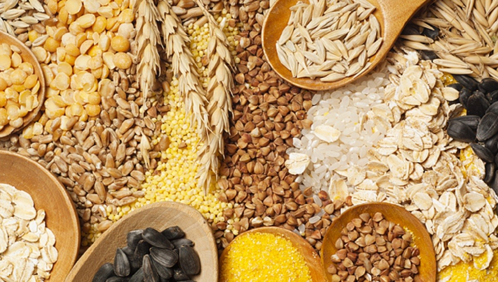
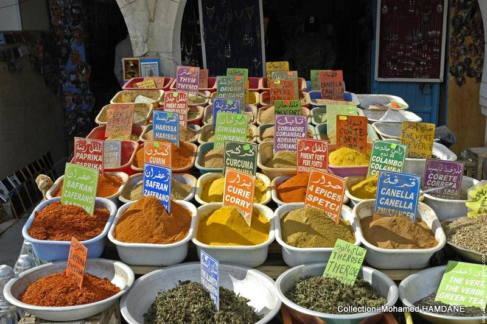
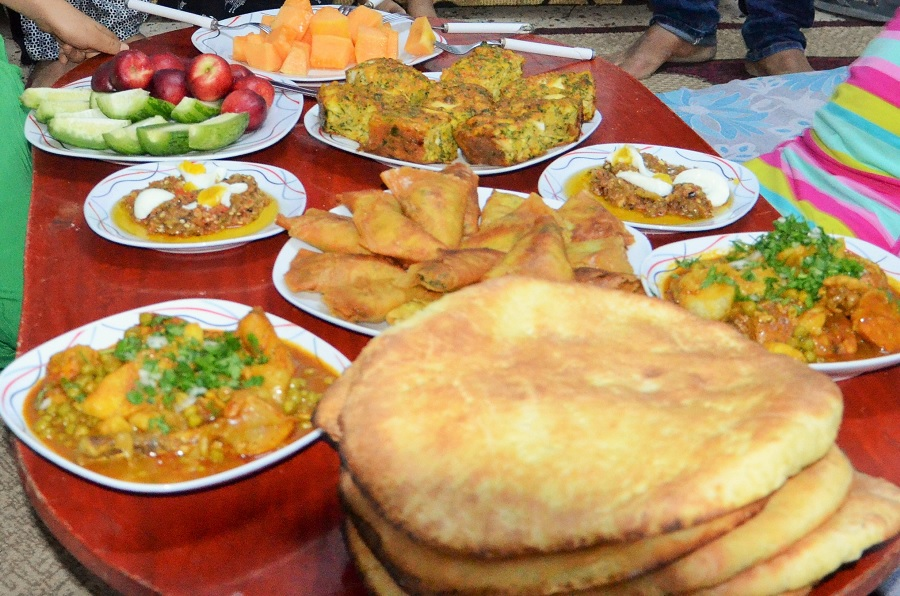

Saveurs Tunisiennes
La cuisine tunisienne, cuisine typiquement méditerranéenne, découle d'une tradition ancestrale de culture gastronomique en Tunisie et reflète les héritages culturels successifs (berbères, puniques, arabes, juifs, turcs, italiens, etc.) ; Elle dépend du climat régional et de la géographie du pays, et par conséquent de ses produits locaux : blé (que l'on retrouve sous forme de pain, pâtes ou semoule), olives et huile d'olive, viande (surtout de mouton, bœuf, poulet et autres volailles, voire de chameau dans certaines régions du sud), fruits et légumes, poissons et fruits de mer (calmar, poulpe, thon, rouget, sparidés, daurade, loup de mer, etc.), surtout le long des côtes. Cette cuisine se différencie sensiblement de ses voisines maghrébines : le tajine tunisien est ainsi différent de la version marocaine ou algérienne, il en est de même pour certaines préparations de pâtes, de salades, etc.
L’ouverture au tourisme apporte également des cuisines internationales, comme les cuisines chinoise, indienne ou japonaise, mais aussi le fast-food.
Voir les recettes --->
L'importance des céréales

Du fait d'une production céréalière historiquement dominée par le blé dur, l'aliment le plus consommé est sans doute les pâtes, en particulier les spaghettis et macaronis servis généralement avec de la sauce tomate et de la viande plus ou moins relevée d'épices, d'ail et de piment. Toutefois, le couscous reste le plat traditionnel par excellence. Celui-ci est caractérisé par une combinaison entre les légumes (pommes de terre, tomates, carottes, courges, etc.), la viande (surtout celle d'agneau) et la semoule dont la graine est produite à partir de la même variété de blé. Le couscous est consommé très fréquemment sous des formes simples — notamment le couscous au poisson qui est une spécialité des zones côtières comme Sfax, Gabès et Djerba — ou sous des formes plus élaborées à l'occasion de cérémonies.
Le pain fait partie intégrante des trois repas quotidiens des Tunisiens qui en consomment plusieurs variétés : le khobz talian dit « pain italien » (pain blanc brié avec beaucoup de mie), le pain fait maison (comme le pain de semoule ou khobz mbesses) ou le pain tabouna, pain rustique traditionnel autrefois largement consommé dans le Sud tunisien et cuit dans des fours construits en terre mêlée à de l'argile (tabouna désignant ce type de four).
Les épices

Les épices, généralement utilisées sous forme de poudre, sont traditionnellement achetées en graines ou en tubercules, triées, lavées, séchées puis moulues. Une réserve familiale (oula) est préparée annuellement, la quantité conservée dépendant de la taille de la famille et de sa consommation.
Les épices de base sont le cumin, la coriandre, le carvi, le curcuma, le piment, le poivre, le gingembre, le clou de girofle et le safran.
Elles sont parfois utilisées séparément mais le plus souvent de façon combinée ; la coriandre et le carvi sont ainsi souvent utilisés ensemble alors que le poivre et le piment sont ajoutés à la plupart des plats.
Les plats
Les pâtes constituent le plat de résistance le plus consommé en Tunisie. Il existe une grande variété de pâtes : des pâtes faites maison comme la rechta (nouilles), les nouacer (pâtes coupées en petits carrés et cuites à la vapeur), les pâtes farcies, et les pâtes industrielles allant des cheveux d'ange (chiria) aux spaghettis. Les pâtes se consomment en soupe, surtout en hiver, cuites au four ou accommodées avec de la sauce tomate, de la viande, des pois chiches, des poivrons et des épices. Les zones côtières ont leurs propres spécialités de pâtes au poisson et aux fruits de mer.
Toutefois, le couscous reste le plat traditionnel surtout pour les cérémonies. Plat d'origine berbère diffusé dans tout le Maghreb, il est préparé à base de semoule travaillée et cuite à la vapeur mais dont la préparation varie selon la localité ; une spécialité de Djerba, le couscous djerbien, veut que la viande ou le poisson ainsi que les légumes soient assaisonnés et cuits ensemble à la vapeur.